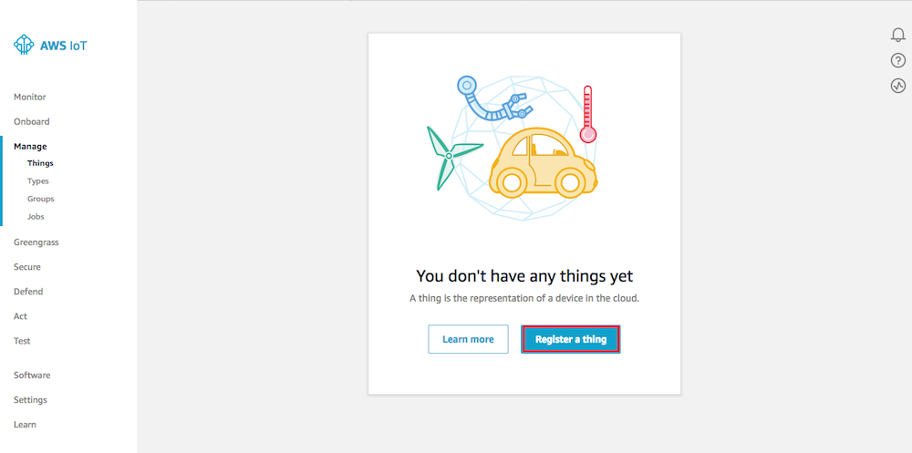
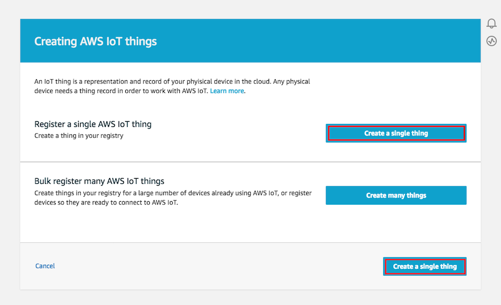
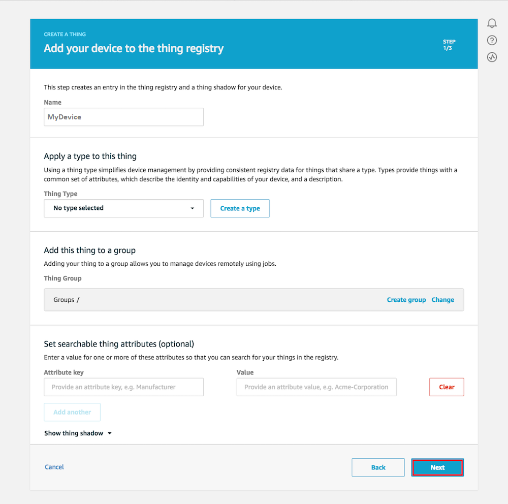
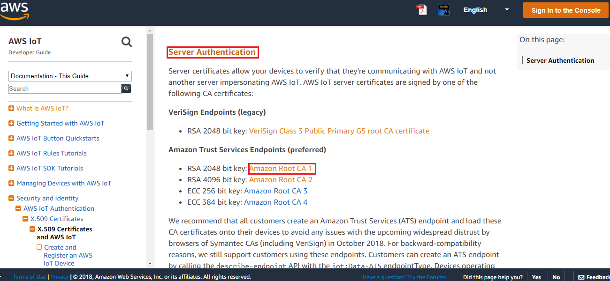
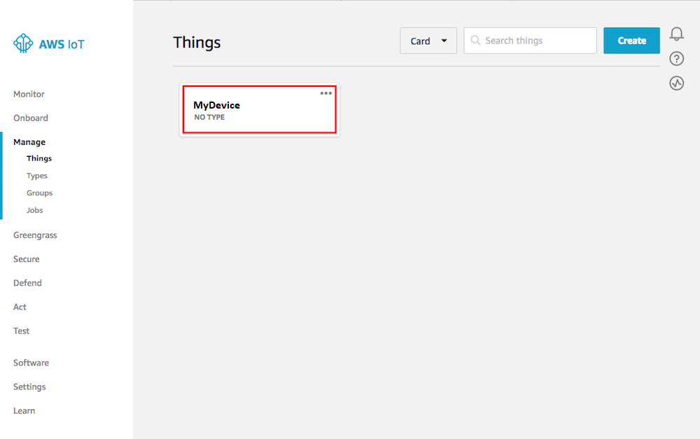
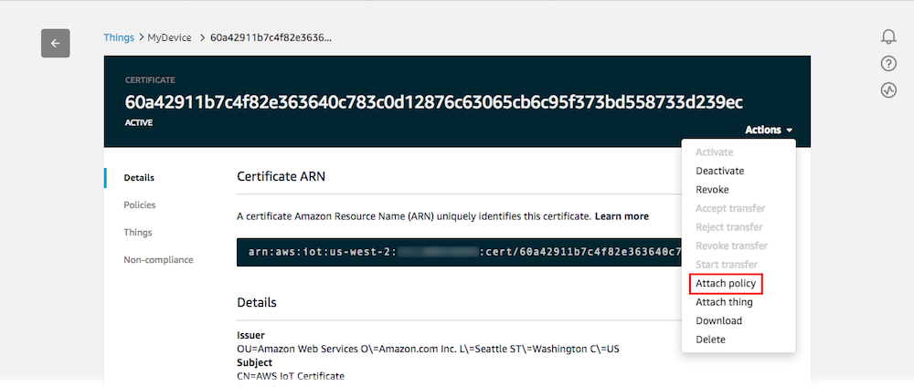

Create device thing in AWS-IoT
-
Sign in to the AWS Management Console, and then open the AWS IoT console at https://console.aws.amazon.com/iot
-
Go to the Monitor page. In the left navigation panel, choose Manage, and then choose Things.

- You don’t have a thing created yet. Choose Register a thing.

- On the Creating AWS IoT things page, choose Create a single thing.

- Enter a name for the device, leave the default values for all the other fields, and then choose Next.

- Now you should generate the certificates.

- Download your public and private keys, certificate, and root certificate authority (CA)on your PC.

- Download your root certificate authority, a new window will open for select a CA to download.

-
Don’t forget to save these files, you need them to set the connection
-
Returns to the previous window and Activate
-
Select Attach a policy
- Close this window. Before, you need to create and attach a new policy to the certificate

-
Open the AWS IoT console again https://console.aws.amazon.com/iot
-
In the left navigation panel, choose Secure, and then choose Policies.
-
Select Create a Policy

- Enter a Name for the policy:
- Action enter iot:*
- Resource ARN enter *
- Effect choose Allow Select Create. This policy allows your Device to publish messages to AWS IoT.

- In the AWS IoT console, choose Manage, Things. On the Things page, choose your Thing

- On the thing’s Details page, in the left navigation panel, choose Interact. Make a note of the REST API endpoint. You need it to connect to your device shadow.

- Now select Security, and choose the certificate that you created earlier.

- In Actions, choose Attach policy

- Select your new policy and then choose Attach